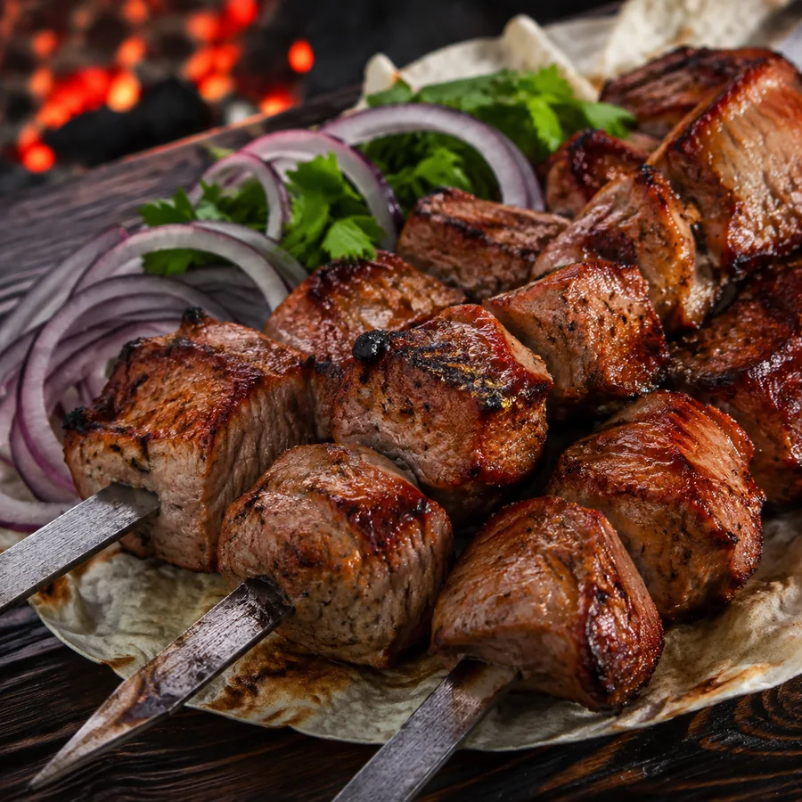
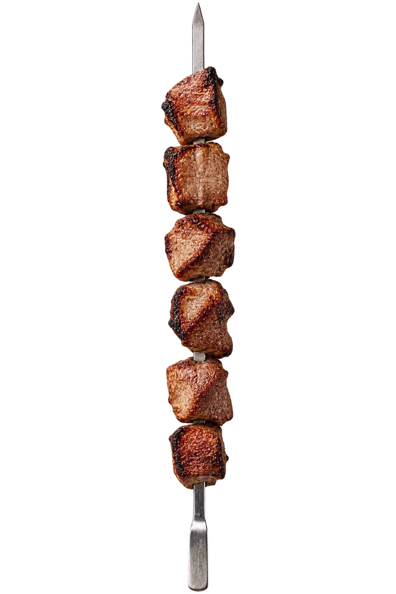
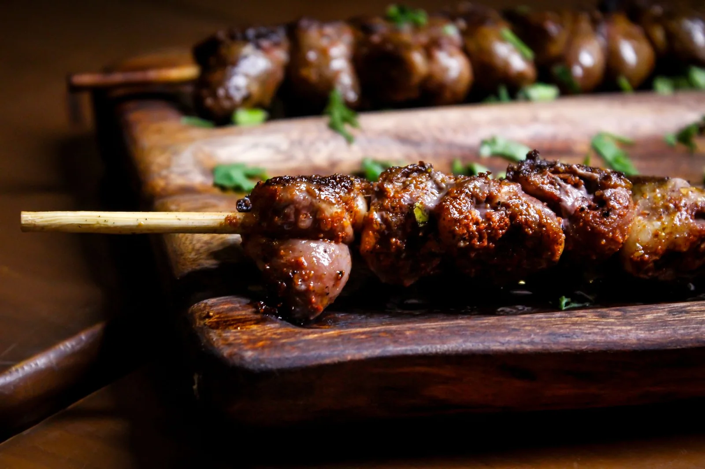

ХитСвинина
100 гШашлык из шеи
Свиная шея, маринованный лук, зелень и лаваш
170 ₽
Сочный жар · каждый день
Шашлык с настоящего мангала — с дымком, хрустящей корочкой и горячим лавашом.


Для компании
Пять порций шашлыка из шеи, два люля из говядины, овощи на углях, лаваш, зелень и три соуса.
Без секретов
Понятные специи, свежий лук и мясо без лишних добавок.
Высокий жар запечатывает сок внутри и даёт ту самую корочку.
Снимаем с шампура прямо перед выдачей — никакого разогрева.
«Сочное мясо, живой огонь.
У нас душевно и вкусно».
Шашлычный уголок · Уфа
Заезжайте в гости